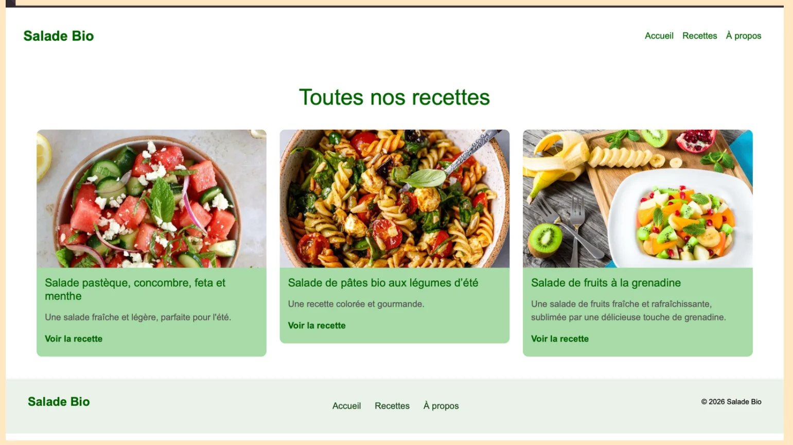

DÉVELOPPEMENT WEB · HTML / CSS / PHP
Création de site web
Dans le cadre d’un projet scolaire, j’ai conçu et développé un site web dédié aux recettes de salades en utilisant HTML, CSS et PHP. Ce projet m’a permis de mettre en pratique la création de pages, la mise en forme d’une interface et la navigation entre les recettes.
Lien du projet à ajouter